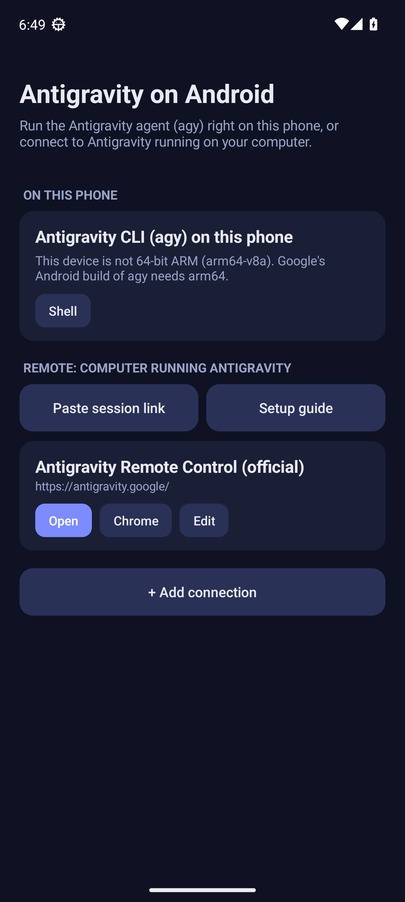
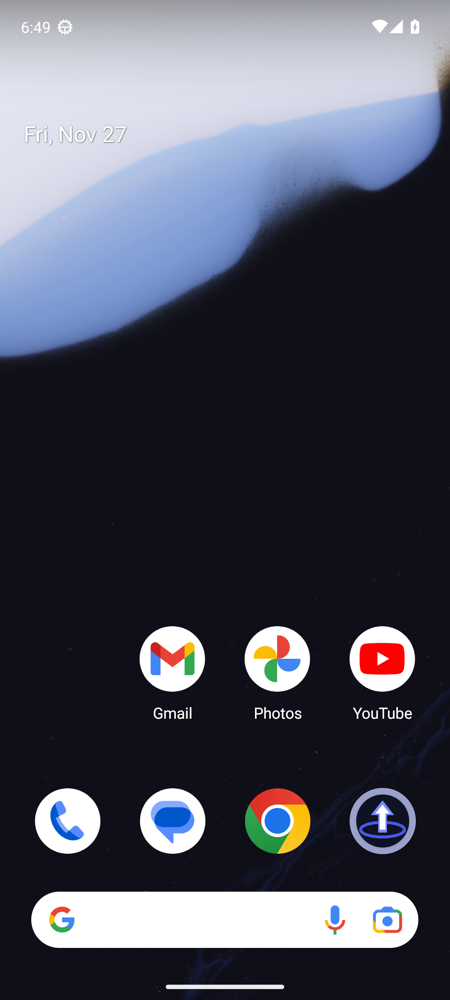

Package com.londkirs.antigravityremote · {"model": "sdk_gphone64_x86_64", "sdk": "33", "release": "13", "abi": "x86_64", "locale": "", "screen": "1080x2400"}
Crash: E/AndroidRuntime( 8005): Process: com.londkirs.antigravityremote, PID: 8005
--------- beginning of crash
E/AndroidRuntime( 8005): FATAL EXCEPTION: main
E/AndroidRuntime( 8005): Process: com.londkirs.antigravityremote, PID: 8005
E/AndroidRuntime( 8005): java.lang.RuntimeException: Unable to start activity ComponentInfo{com.londkirs.antigravityremote/com.londkirs.antigravityremote.TerminalActivity}: java.lang.NullPointerException: Attempt to read from field 'int com.termux.view.TerminalRenderer.mTextSize' on a null object reference in method 'void com.termux.view.TerminalView.setTypeface(android.graphics.Typeface)'
E/AndroidRuntime( 8005): at android.app.ActivityThread.performLaunchActivity(ActivityThread.java:3645)
E/AndroidRuntime( 8005): at android.app.ActivityThread.handleLaunchActivity(ActivityThread.java:3782)
E/AndroidRuntime( 8005): at android.app.servertransaction.LaunchActivityItem.execute(LaunchActivityItem.java:101)
E/AndroidRuntime( 8005): at android.app.servertransaction.TransactionExecutor.executeCallbacks(TransactionExecutor.java:138)
E/AndroidRuntime( 8005): at android.app.servertransaction.TransactionExecutor.execute(TransactionExecutor.java:95)
E/AndroidRuntime( 8005): at android.app.ActivityThread$H.handleMessage(ActivityThread.java:2307)
E/AndroidRuntime( 8005): at android.os.Handler.dispatchMessage(Handler.java:106)
E/AndroidRuntime( 8005): at android.os.Looper.loopOnce(Looper.java:201)
E/AndroidRuntime( 8005): at android.os.Looper.loop(Looper.java:288)
E/AndroidRuntime( 8005): at android.app.ActivityThread.main(ActivityThread.java:7924)
E/AndroidRuntime( 8005): at java.lang.reflect.Method.invoke(Native Method)
E/AndroidRuntime( 8005): at com.android.internal.os.RuntimeInit$MethodAndArgsCaller.run(RuntimeInit.java:548)
E/AndroidRuntime( 8005): at com.android.internal.os.ZygoteInit.main(ZygoteInit.java:936)
E/AndroidRuntime( 8005): Caused by: java.lang.NullPointerException: Attempt to read from field 'int com.termux.view.TerminalRenderer.mTextSize' on a null object reference in method 'void com.termux.view.TerminalView.setTypeface(android.graphics.Typeface)'
E/AndroidRuntime( 8005): at com.termux.view.TerminalView.setTypeface(TerminalView.java:454)
E/AndroidRuntime( 8005): at com.londkirs.antigravityremote.TerminalActivity.onCreate(TerminalActivity.kt:118)
E/AndroidRuntime( 8005): at android.app.Activity.performCreate(Activity.java:8342)
E/AndroidRuntime( 8005): at android.app.Activity.performCreate(Activity.java:8321)
E/AndroidRuntime( 8005): at android.app.Instrumentation.callActivityOnCreate(Instrumentation.java:1417)
E/AndroidRuntime( 8005): at android.app.ActivityThread.performLaunchActivity(ActivityThread.java:3626)
E/AndroidRuntime( 8005): ... 12 more
--------- beginning of crash| # | Action | Detail | Result | Error |
|---|---|---|---|---|
| 1 | explore-tap | Shell | failed | app crashed after this tap |